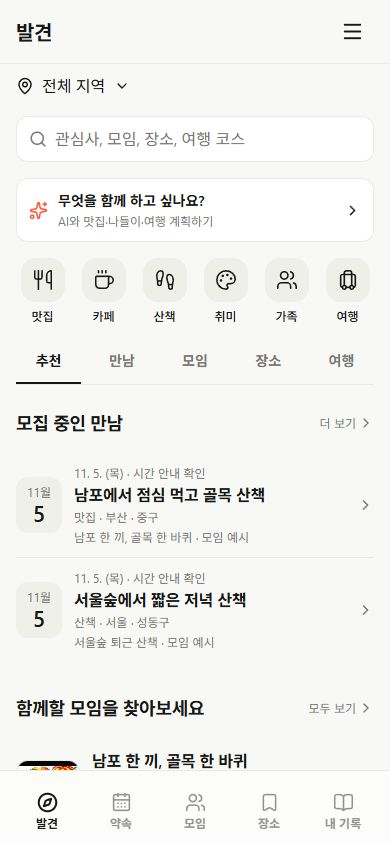

상단에 역할이 너무 많음
페이지 이름, 화면 탭, 보조 메뉴, 공지, 도우미와 필터가 연달아 나타납니다. 상단에 있다는 이유만으로 모두 같은 중요도를 갖게 됩니다.
약속·모임·장소·여행을 한 서비스로 확장하면서 도구와 안내가 겹쳤습니다. 글자를 더 작게 만드는 대신, 상단의 역할과 정보의 묶음을 다시 설계합니다.
사용자가 제공한 소모임 앱 캡처는 썸네일·이름·소개·활동 정보를 일정한 행 안에 모읍니다. Spotlog는 같은 정보를 큰 구역과 독립 버튼으로 나누면서 탐색 흐름이 끊깁니다.
페이지 이름, 화면 탭, 보조 메뉴, 공지, 도우미와 필터가 연달아 나타납니다. 상단에 있다는 이유만으로 모두 같은 중요도를 갖게 됩니다.
넓은 카드와 여백, 목록 밖의 생성 버튼이 먼저 보입니다. 모임을 비교하거나 대화를 읽으러 온 사람은 내용을 찾기 위해 먼저 스크롤해야 합니다.
탭·도우미·더보기·정보 카드가 비슷한 테두리와 크기를 씁니다. 어느 것이 화면 이동이고, 어느 것이 새 자료를 만드는지 형태만 보고 판단하기 어렵습니다.
측정은 현재 로컬의 390×844 CSS px 화면 기준입니다. 아래 목표는 제안 값이며, 소모임의 실제 픽셀 측정값이 아닙니다. 상태 표시줄·브라우저 바·기기 안전 영역은 별도입니다.
| 대상 | 현재 로컬 관찰 | 개선 목표 | 동작 기준 |
|---|---|---|---|
| 발견 | 첫 약속 453px / 행 104–105px | 고정 헤더 56px 첫 목록 시작 240px 이내 | 현재 453px는 고정 헤더 높이가 아니라 첫 약속 행의 시작 위치. 헤더·지역·AI 생성·목적 버튼·탭이 반복됨. 추천 카테고리는 목록 뒤 본문에 배치. |
| 모임 찾기 | 첫 모임 472px / 행 104px / 완전히 보이는 행 2개 | 상단 고정 100px 첫 행 200px 이내 | 지역·관심사 필터는 한 줄에서 바로 접근. 큰 소개 배너와 별도 생성 카드를 제거. |
| 모임 홈 | 일반 멤버 첫 약속 251px / 행 102px 모임장은 가입 요청 영역 때문에 첫 행 351px | 헤더 56px + 모임 탭 44px 일반 멤버 첫 약속 220px 이내 | 모임장 알림과 일반 멤버 화면을 구분. 가입 요청은 접힌 한 줄 상태로 접근하고 승인 동작 유지. |
| 대화 | 기본 상단 225px / 진행 항목 있을 때 278px 입력 도크 71px → 읽기 영역 548px / 495px | A안: 상단 최대 100px B안: 기존 탭 유지, 약 153px | A안은 제목 56px + 접힌 맥락 44px. B안은 현재 제목·탭 109px + 맥락 44px. 도구를 펼치지 않으면 대화를 밀어내지 않음. |
| 장소 탐색 | 첫 장소 239px / 행 97px / 완전히 보이는 행 5개 | 고정 헤더 56px 첫 행 약 180px / 행 88–96px | 현재도 비교적 촘촘함. 대화·관심 장소보다 우선순위 낮음. 지역·종류 필터와 목록/지도 전환만 공통화. |
| 관심 장소 | 첫 장소 435px / 행 197px / 완전히 보이는 행 1개 | 첫 행 220px 이내 행 88–104px | 저장 목록을 우선. 지역·종류를 한 번에 누르게 유지하고 여행 만들기는 작은 보조 행동으로 배치. 긴 카드에서 행으로 전환. |
| 내 모임 | 첫 모임 326px / 행 93px / 완전히 보이는 행 3개 | 불필요한 상단 구역 정리 행 88–96px 유지 | 행 자체를 더 줄이기보다 가입 모임·가족/친구/취미 분류·안 읽은 상태를 앞당김. |
| 목록 한 항목 | 일반 목록·카드·설명 영역이 화면마다 다름 | 기본 80–88px / 사진 64px | 사진·이름·한 줄 소개·지역·상태를 한 행에 배치. 긴 이름은 상세에서 전체 표시. |
대화 영역 비교: 현재 진행 항목이 있는 경우 844px 화면에서 495px, 667px 화면에서 318px입니다. A 목표는 같은 71px 입력 도크를 유지하면 각각 673px / 496px, B 목표는 620px / 443px입니다. 현재 실측과 제안 목표를 구분한 계산이며 실제 기기 키보드는 별도 검수합니다. 비교안의 기본 헤더 56px와 탭 44px는 CSS px 실크기입니다. 아래 모형에서 320·390·460px 폭을 바꿔 확인할 수 있습니다. 제안은 고정 영역만 줄이는 것이 아니라, 상단에서 읽기와 선택을 방해하는 중복 요소도 줄입니다.
현재 캡처와 개선 모형을 비교합니다. 개선 모형의 탭·필터·방 선택·첨부 도구를 눌러보세요. 가상 내용만 사용하며 실제 모임·채팅·저장 자료를 변경하지 않습니다.
A는 모임 화면 탭을 부모 화면에 유지하고 대화에서는 이름·방 선택으로 소속을 표시합니다. B는 현재 제목과 탭을 남기고 도구만 한 줄로 줄입니다. 소모임 앱 참고 캡처는 탭을 유지합니다. A는 이를 그대로 복제한 안이 아니며, 탭 제거는 아직 확정하지 않았습니다.

현재 화면 캡처 준비 중입니다. 오른쪽은 실제 앱과 분리한 개선 모형입니다.
현재 화면의 헤더와 본문 비중을 확인합니다.
모형 390 CSS px · 축소 없이 표시
관심 지역 아래에 가까운 모임과 함께할 약속을 짧은 행으로 보여줍니다. 장소·모임·여행은 탭으로 구분하고, 추천 안에서 각각의 요약을 제공합니다.
여행 탭과 가족여행·DAY 동선은 유지합니다. 여행 목록은 큰 표지·지도 대신 지역·기간·동선 수를 먼저 보여주고, 상세에서 지도와 DAY를 펼칩니다.
모든 요소에 테두리와 둥근 모양을 주지 않습니다. 이동·실행·자료·조건의 외형을 네 가지로 고정합니다.
같은 단계의 화면 이동. 선택된 항목만 굵기와 밑줄로 표시합니다.
저장·확정·생성 같은 주 행동에만 검정 버튼을 사용합니다. 화면당 주 행동 하나.
모임·장소·게시물은 목록으로 읽습니다. 들어갈 수 있는 행에만 이동 표시를 둡니다.
지역·업종·모집 상태는 보조 정보. 누르는 필터와 읽는 상태 태그를 구분합니다.
기능과 데이터는 보존하면서 화면의 껍질과 목록 단위를 먼저 통일합니다. 아래는 다음 적용을 위한 제안이며 아직 앱에 반영하지 않았습니다.
헤더 56px / 탭 44px 공통화. 대화는 방 정보 한 줄과 접힌 공지만 유지. 모임 탭 중복을 없애고 도구는 첨부 메뉴로 모읍니다.
64px 썸네일과 80–88px 행을 공통화. 큰 생성 카드·중복 설명을 정리하고 지역·관심사·모집 상태를 비교할 수 있게 묶습니다.
가입 전·가입 후·모임장 화면, 긴 이름·빈 목록·읽지 않은 대화, 키보드·글자 확대·여행 DAY 편집을 실제 흐름으로 확인합니다.
| 검수 항목 | 통과 기준 | 주의할 회귀 |
|---|---|---|
| 상단 고정 | 일반 화면 최대 100px, 대화 기본 56px / 공지 있을 때 최대 100px. 검색·편집 중 예외는 목적이 명확해야 함. | 공지·미확인 상태를 감추지 않기. 모임 전체와 특정 약속 방의 소속 유지. |
| 목록 밀도 | 390×844에서 큰 소개 영역 없이 비교할 항목이 즉시 보임. 동일 역할 행은 같은 높이와 정보 순서. | 긴 장소명·보조 상태를 무조건 잘라 의미를 잃지 않기. 상세에서 전체 보기. |
| 입력·접근성 | 본문 14px / 보조 12px / 입력 16px, 주요 조작 44px 이상. 아이콘 그림은 18–22px로 유지하되 보이지 않는 누름 영역은 44px. 320·390·460px 및 글자 확대 확인. | 터치 영역 축소 금지. 선택 상태는 색 외에 밑줄·굵기·접근성 이름 제공. |
| 이동·스크롤 | 검색·필터·목록 위치 복원. 탭과 입력창이 가려지지 않고 내용 영역만 스크롤. | 방 전환·뒤로가기·원문 이동에서 헤더가 화면 밖으로 밀리지 않기. |
| 약속·여행·개인 기록 | 개인과 모임 여행, DAY 동선, 고정 예약, 저장 장소, 승인 후 반영 흐름 유지. | 여행 진입을 없애거나 기존 일정·사용자 원문을 덮어쓰지 않기. |
사용자가 제공한 소모임 앱 캡처의 행 밀도·상세 탭·대화 도구 배치를 정성 비교했습니다. 원본 앱의 폰트나 터치 크기를 정밀 측정한 것으로 취급하지 않습니다. 공식 웹은 별도로 방문 확인했으며 큰 표지 카드도 사용합니다. 앱 캡처의 목록 구조와 웹의 지역·검색 통합 헤더를 구분해 참고했습니다.
소모임의 관심사·지역 중심 탐색은 모임 발견에 참고하고, Spotlog의 약속·장소·여행 동선·가족 모임은 유지합니다. 현재 화면 수치는 로컬 검수 화면의 CSS 실측이며, 우측 모형 수치는 별도로 정한 제안값입니다. 예시의 모임·지역·인원·대화는 가상 자료입니다.